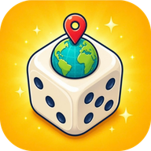

Dice Atlasلعبة نرد خفيفة وممتعة للعائلة: ارمِ النرد، تحرّك على اللوحة، اجمع العملات وافتح الصناديق، ثم أعد بناء معالم شهيرة في مدن مثل القاهرة ومراكش وإسطنبول والبتراء وروما وباريس، وأجب عن أسئلة ثقافية لتجمع النجوم.
Dice Atlas لعبة يطوّرها مطوّر مستقل من المغرب. نريد ألعابًا بسيطة، جميلة، وتناسب كل أفراد العائلة، وباللغتين العربية والإنجليزية.
للاقتراحات أو المشاكل أو أي استفسار عن الخصوصية:
ass.tazrzit@gmail.com
نحاول الرد خلال بضعة أيام.
A light, family-friendly dice board game: roll, move around the board, collect coins and open chests, then rebuild famous landmarks in cities such as Cairo, Marrakech, Istanbul, Petra, Rome and Paris, and answer culture quizzes to earn stars.
Dice Atlas is developed by an independent developer in Morocco. We want simple, beautiful games the whole family can enjoy, in both Arabic and English.
Suggestions, problems or privacy questions:
ass.tazrzit@gmail.com
We try to reply within a few days.